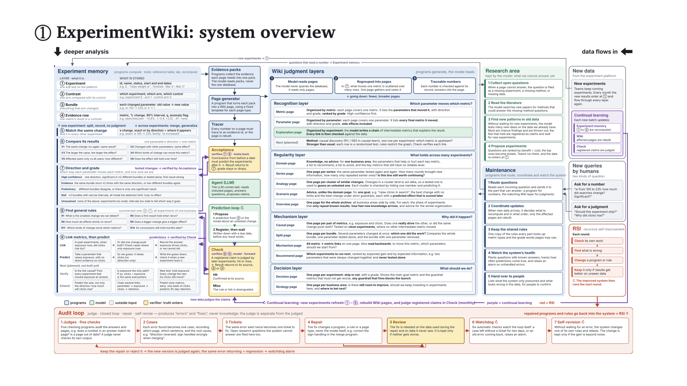
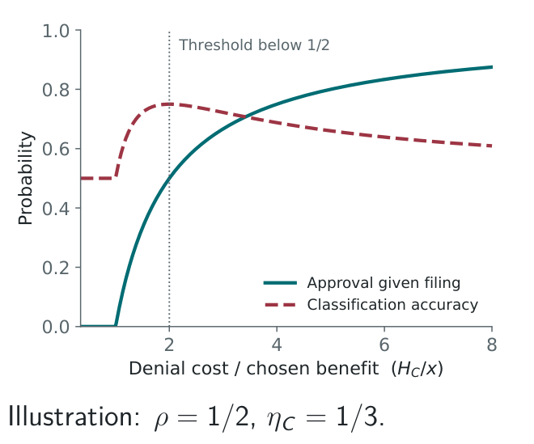

AgentSpec: A Modular Specification Framework for Controlled Analysis of Embodied Agents
Jixuan Chen, Jianzhi Shen, Haoqiang Kang, Zhi Hong, Qingyi Jiang, Soham Bose, Yiming Zhang, Leon Leng, Amit Vyas, Lingjun Mao, Siru Ouyang, Kun Zhou, Lianhui Qin
2026 · AI agent systems design Modular ArchitecturesAgent Evaluation
TL;DR: AgentSpec makes embodied agents modular, allowing researchers to swap and combine reasoning, memory, reflection, and learning components through standardized interfaces. Controlled experiments across DeliveryBench, ALFRED, MiniGrid, and RoboTHOR test how these combinations affect task performance and computational cost. The results show that stronger components do not automatically produce better agents: memory must match the reasoning strategy, and useful combinations depend on the environment. Short tasks benefit from step-by-step reasoning, while longer tasks rely more on state tracking. Lightweight, compatible combinations can outperform heavier, poorly matched pipelines in performance–cost trade-offs.
TLDR: Cryptocurrency projects give away free tokens to reward early users. These giveaways, called “airdrops,” can be worth thousands of dollars per person. However, one person can create many fake accounts and collect the reward many times over. This fraud is called a sybil attack. Yet researchers have no shared, public database to study this fraud across different projects. We present HasciDB, the largest open-source airdrop sybil detection database, covering 2.54 million accounts across 16 projects (2020–2024). For every account, HasciDB checks for telltale signs of cheating. Examples include many accounts sending identical transactions within minutes, or funneling rewards to the same collection address. Across the dataset, 964,034 accounts (38.0%) exhibit suspicious patterns. Cross-project analysis shows that a project’s giveaway rules determine how much fraud it attracts. The most vulnerable project lost 87.4% of its tokens to suspicious accounts. The most resistant lost only 8.5%.
Accepted at Nanyang Blockchain Conference 2026/Website/Paper
Working Papers
Optimal Capping Theory for Heavy-Tailed Metrics in Experimentation
TL;DR: A few big spenders can make revenue experiments noisy. Capping their spending reduces noise, but may also remove real treatment gains. We use a prespecified belief about how treatment changes spending to choose the cap with the highest predicted signal-to-noise ratio, then estimate and test the capped effect using the same experiment’s observed data. Our first theorem bounds selection loss relative to the best score under that belief—not the true optimal cap. Our second shows that, under additional conditions including localization of near-optimal caps and a local capped-effect null, the test asymptotically controls false positives despite reusing the data. The belief need not be correct, but must be fixed independently of treatment assignment. Simulations show why this distinction matters: choosing the largest observed t-statistic inflates false positives, while a poorly matched belief can miss genuine revenue growth. Learning the belief from the same experiment remains work in progress.
Working paper · Draft available upon request

ExperimentWiki
2026 · Knowledge RSI
TL;DR: ExperimentWiki compiles 4,386 past A/B experiments into a knowledge base that grades the evidence an agent reads before giving advice. Programs compute the statistics and write 4,444 pages from about 1.23 million rows of effect estimates. A table records 762 links between metrics. The language model reads the pages without vector search.
In a blind writing test, the model reversed the direction of 46% of checkable causal claims when it wrote first. After it saw the computed data, 147 of 150 claims held. On later experiments, the share of directions that held was 0.81 for high-confidence findings, 0.70 for evidence-grade findings, and 0.53 for preliminary findings. An audit ran 318 checks and opened 149 tickets. Of 28 fixes tried, 19 were kept and 9 rejected.
From Scientists to Agents · CODE@MIT 2026 talk · View talk slides
Talk authors: Leon Leng, Shichao Han, Daimin Tang, Yong Wang, Shi Chen · University of Washington · Tencent

Centralized Evaluation vs. Decentralized Evaluation
Leon Leng, Rowena Gan, Shi Chen
AI for social science, economics and finance
Working paper · Presented at INFORMS and POMS, 2025–2026
2026 · AI for social science, economics and finance
TL;DR: Causal Bench tests models on realistic causal-inference tasks with known answers. Programs score the responses. In a blind test, the top models passed 93–95% of v1 tasks. At those pass rates, v1 no longer distinguishes the top models. Harder versions are in development.
From Scientists to Agents · CODE@MIT 2026 talk
Talk authors: Leon Leng, Shichao Han, Daimin Tang, Yong Wang, Shi Chen · University of Washington · Tencent
Work in Progress
Organizational Design and Compute Allocation for AI Agents
Microsoft Research Asia
2026 · AI agent systems design
Ongoing research
Applied Work
From Scientists to Agents · CODE@MIT 2026 talk
Leon Leng, Shichao Han, Daimin Tang, Yong Wang, Shi Chen
2026 · AI for social science, economics and finance
TL;DR: Can post-training improve causal analysis while preserving a model’s other skills? We compare two training runs on a 27B open model. Both use LoRA through continued pretraining, supervised fine-tuning, and reinforcement learning with GRPO. A fixed rule drops a version if performance on two or more held-out skills falls beyond a preset threshold.
2026 · AI for social science, economics and finance
TL;DR: Does a model use a causal concept when it answers a question correctly? We study ATT versus ATE, pre- versus post-treatment variables, and identifiability. Probes test whether the model encodes each distinction. Activation patching and steering test whether changing those representations changes its answers.